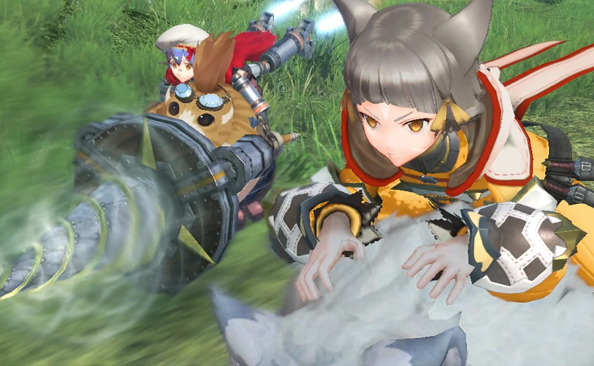
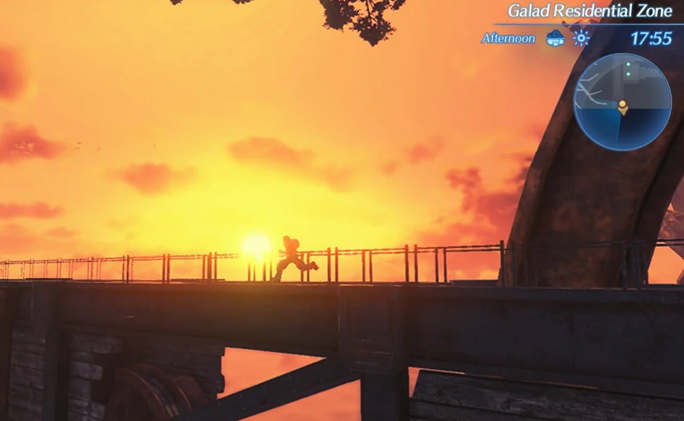
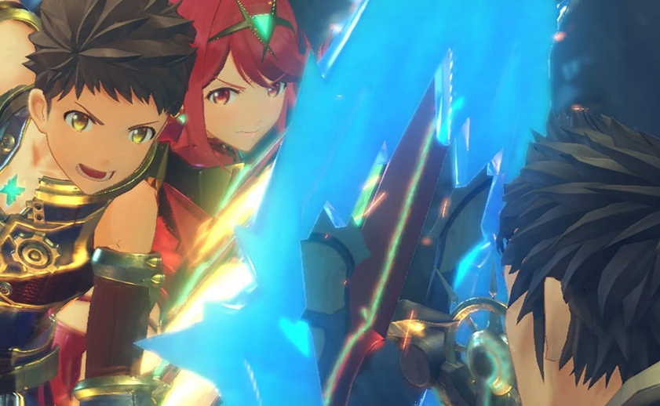
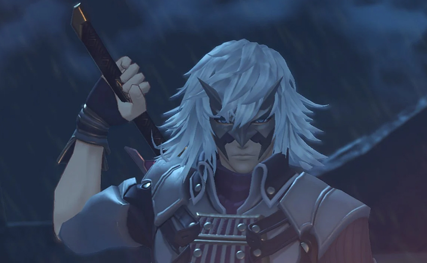

Introducción
En el enorme RPG Xenoblade Chronicles 2 para Nintendo Switch, explorarás un océano infinito de nubes entre las que perviven los restos de una civilización sobre los lomos de enormes bestias llamadas titanes. Descubre la historia de Rex y su nueva amiga Pyra, un ser misterioso ser conocido como Blade que le otorga enorme poder. Juntos emprenderán la búsqueda del hogar perdido de Pyra, el Elíseo, la cuna de la humanidad.
El mundo de Alrest se ha desarrollado sobre los cuerpos de enormes criaturas llamadas titanes. En el centro de Alrest crece el Árbol del Mundo, y sobre él se encuentra el paraíso definitivo para toda la humanidad, el Elíseo.
Explora la saga

Xenoblade Chronicles: Definitive Edition
Fecha de lanzamiento oficial: 2010
Lanzado para Wii, Wii U, Nintendo 3DS, Nintendo Switch


Xenoblade Chronicles 2: Torna - The Golden Country
Fecha de lanzamiento oficial: 2018
Lanzado para Nintendo Switch
Imágenes y vídeos
-

- 
-

- 
- 
-

-

-

- 
-